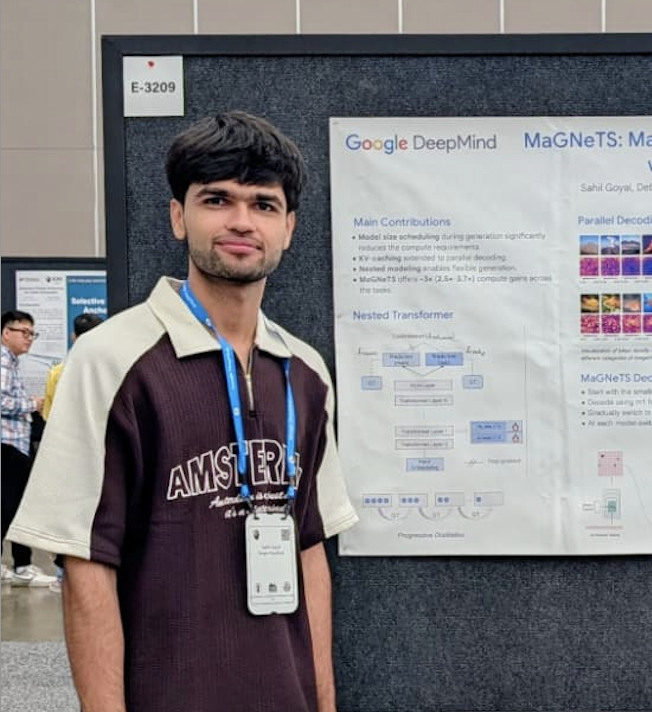

Hi, I am Sahil, a final-year student from IIT Roorkee, India. I am pursuing an Integrated MS in Applied Mathematics. I am interested in Machine Learning, Computer Vision, and Multimodal Learning. Recently, I worked on Talking Face Generation and Evaluating and Refining Graphic Designs. I also like to do competitive programming occasionally.